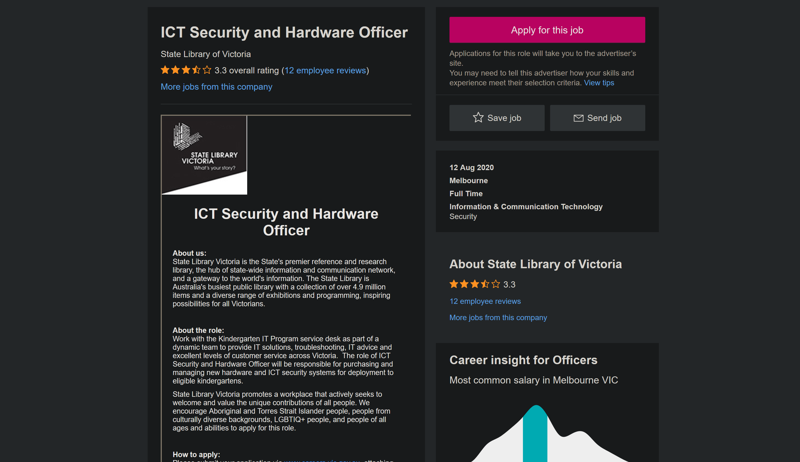

This is a paragraph.
“My interest in IT is primarily IT security (cybersecurity). My interest in IT started when I was a little kid (around the age of 7) when my parents got the family their very first desktop PC. I guess this event of my family getting their very first PC was when my interest in IT sparked, as from that point on, I was hooked onto using computers and technology. I have quite the background and experience in IT, in terms of primary and high school as I took every IT-related elective class in my high school years, as well as learning some IT in IT classes in primary school. Probably my most notable IT experience would be my experience doing a work experience program in the IT industry. I had completed a two-week work experience program at the head office of Officeworks. In this program I got the opportunity to work in various areas of the IT department, such as the helpdesk, the server room, and the repairs section. The completion of this work experience in the IT department in 2017 really made me consider not only studying IT in the future (todays present), but making me really consider an IT based and focused career for when I graduate.”
“I chose to come to RMIT because of many reasons. The first being the reputation. I had heard that RMIT is one of the best universities for studying technology-based subjects (as the word ‘technology’s even in its name!). So, I had made it a goal of mine to make it into RMIT after completing year 12. Another big factor which made me really want to study at RMIT was its location. Compared to some of the other universities out there, RMIT is fairly close to me – it’s about a 30-minute train ride. Location, to me is a really big factor when choosing a university, as it means I will not have to waste hours of my day taking transport, whereas I could be using that time for study! Also, a lot of my friends (mostly high school friends from year 12) were planning on going to go off to RMIT to study, so I had figured that choosing RMIT would be a smart decision as I would know a fair amount of people there, making my transition process from year 12 to university easier, as I could ask my fellow peers for guidance and help from time to time.”
https://www.seek.com.au/job/50382531?type=standard#searchRequestToken=7db81e55-f93c-4c20-9812-cf0f3124379a
